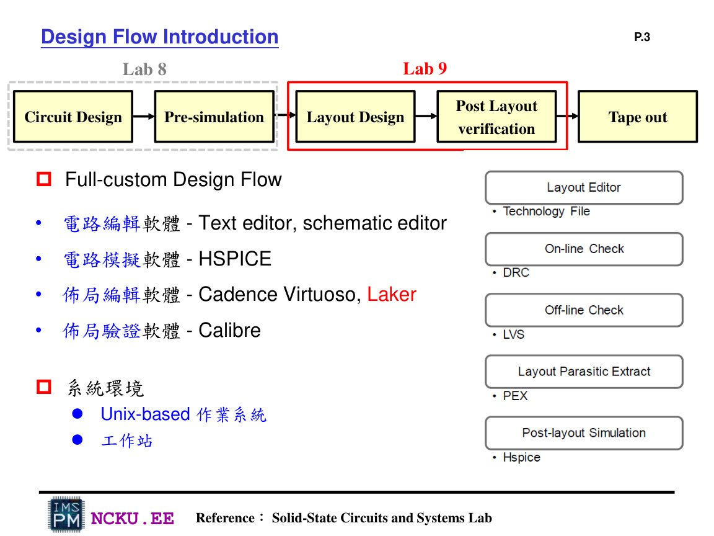
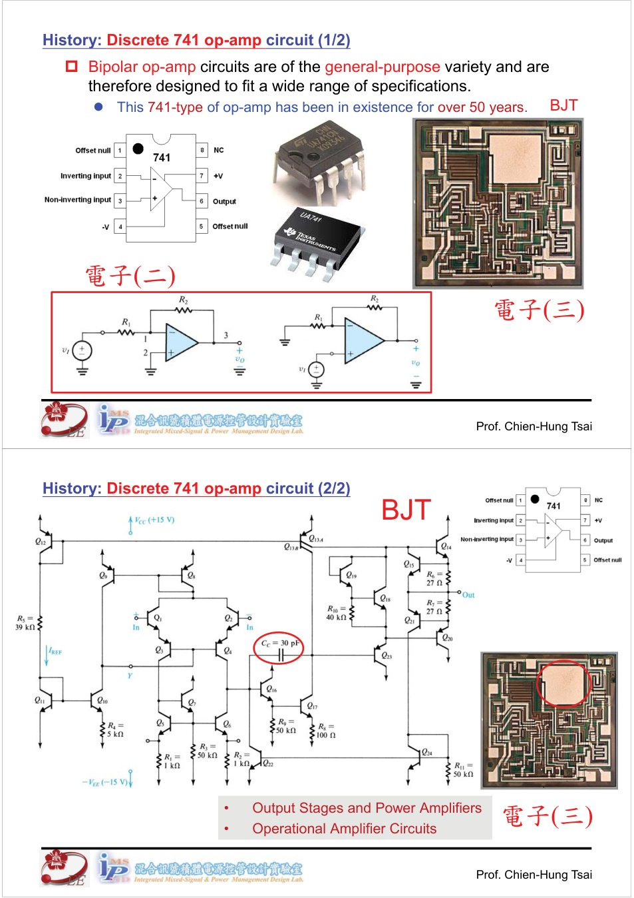

作業八與作業九完整製作流程互動式說明
這份多網頁 HTML 把 Lab8 的 HSPICE 電路模擬與 Lab9 的 Laker layout 驗證串成一條完整 IC design flow。你可以照著頁面一步一步完成電路檔、測試檔、layout、DRC/LVS/PEX、post-sim、報告與最後繳交 ZIP。
開始 Lab8開始 Lab9查看最後繳交一、兩個作業在 IC 設計流程中的位置
Circuit Design
→Pre-simulation
Lab8
→Lab8
Layout Design
Lab9
→Lab9
Post-layout Verification
DRC/LVS/PEX
→DRC/LVS/PEX
Post-simulation
→Report + ZIP

Lab9 講義中的 full-custom design flow：Lab8 對應 circuit design / pre-simulation；Lab9 對應 layout design / post-layout verification。

IC 設計抽象層級：從 behavior / RTL / gate 到 transistor 與 layout。
二、最後要產生什麼成果？
Lab8 成果
完成 inverter、NAND、NOR 的 circuit.spi 與 testbench.sp，跑出 HSPICE job concluded，並截 WaveView 波形。
Lab9 成果
使用 Laker 畫 NAND 與 NOR layout，通過 DRC、LVS、PEX，再做 post-sim 並比較 pre-sim。
繳交版本
整理 Lab8_學號.pdf、Lab9_學號.pdf 與相關 netlist / report 檔，壓縮成 Moodle 要求的 ZIP。
三、總工具清單
| 工具 | Lab8 用途 | Lab9 用途 |
|---|---|---|
| Unix / 工作站 | 建立檔案、執行 hspice、開 WaveView | 啟動 Laker、Calibre、HSPICE |
| gedit / 文字編輯器 | 撰寫 circuit.spi、testbench.sp | 修改 LVS / PEX netlist、post-sim testbench |
| HSPICE | pre-sim 模擬 | post-sim 模擬 |
| WaveView | 看 pre-sim 波形 | 看 post-sim 波形 |
| Laker | 不主要使用 | 畫 NAND / NOR layout |
| Calibre | 不主要使用 | DRC、LVS、PEX |
| 截圖工具 / Word / PDF / ZIP | 產生報告與最終繳交版本 | |